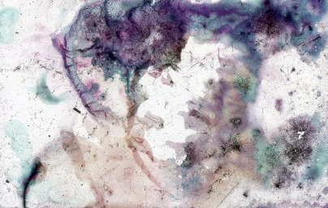
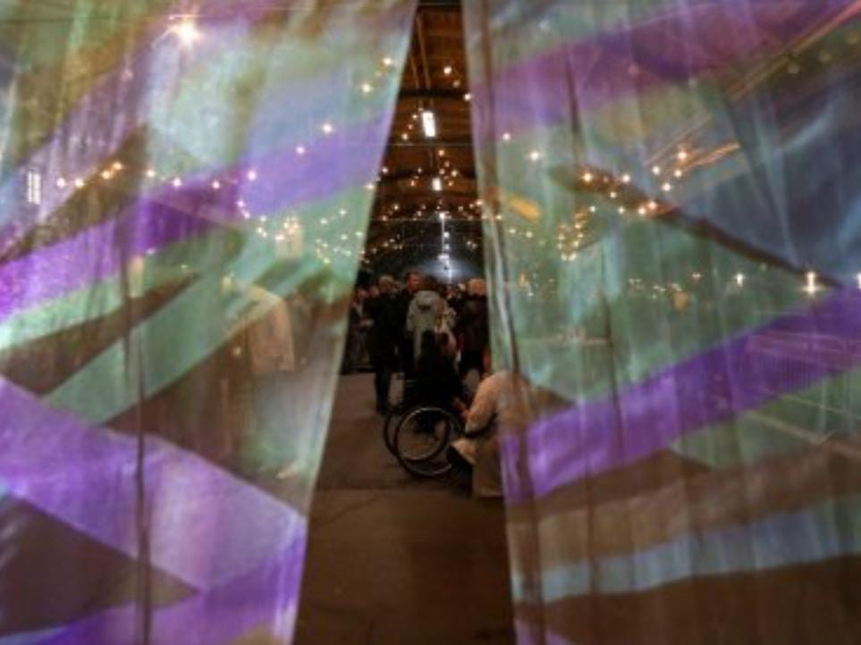

Exposiciones
29 noviembre, 2023 - 11 marzo, 2024
Ibon Aranberri
Vista parcial

4 octubre, 2023 - 26 febrero,2024
Ben Shahn
De la no conformidad
Colección

Actividades

Martes 28, miércoles 29 y jueves 30 de noviembre, 2023 - Consultar programa
Archivos del común V
Memorias fúngicas

Miércoles 29 de noviembre, 2023 - 21:00 h
Cabello/Carceller. Una voz para Erauso. Epílogo para un tiempo trans
Presentación de Gabriela Cabezón Cámara

Viernes 1, sábado 2 y domingo 3 de diciembre, 2023 - Consultar programa